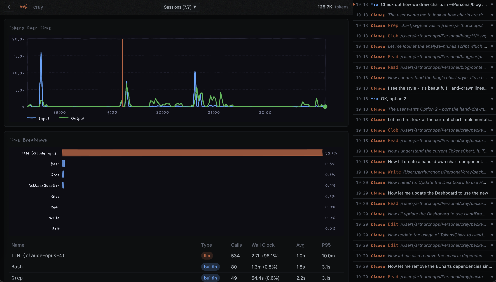

A local profiler and debugger for Claude Code sessions. Visualize token usage and tool calls.

See input, output, and cache tokens across your session timeline.
Understand which tools take time. See call counts, latencies, and errors.
Runs entirely on your machine. No data leaves your computer.
Auto-discover all sessions, launch the explorer UI
Analyze sessions for a specific project
Print a terminal summary without opening the UI